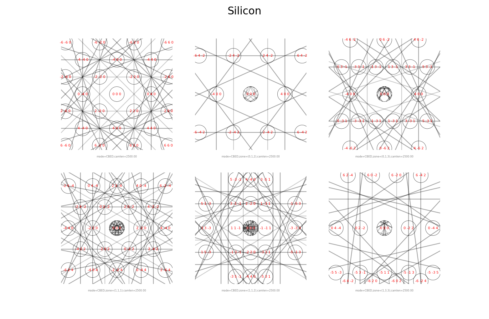
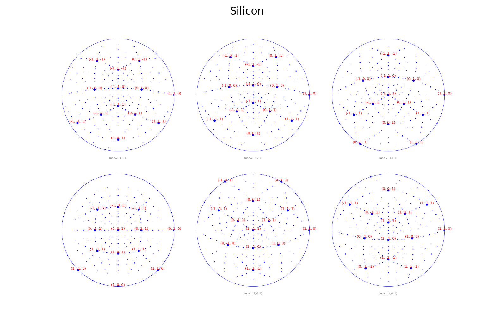

Examples#
pyEMAPS ships with sample scripts for each feature. Copy them into a pyemaps_samples folder
in the current directory, then run any of them with python:
pyemaps -cp
cd pyemaps_samples
python si_dif.py

Kinematic diffraction patterns for Silicon over a series of tilts and zone axes, rendered with matplotlib.
Guide: Kinematic diffraction

Dynamic (Bloch wave) CBED patterns for Silicon, in parallel processes.


Electron powder diffraction profiles for Silicon and Diamond.


Generates an Aluminium pattern database and indexes the sample image al.img.
Guide: 4D-STEM pattern indexing
More samples#
si_lacbed.py: large-angle CBED, one image per diffracted beam.
si_csf.py: crystal structure factors.
si_scm.py: the scattering matrix, eigenvalues and diffracted beams of a Bloch session.
al_dpgen.py: generates a diffraction pattern database for Aluminium, used by 4D-STEM indexing. Licensed
convert_image.py: converts a raw image into pyEMAPS’ small-header image format. Licensed
adf.py: annular bright and dark field images and a masked image from an experimental image. It needs adftest900.im3, available from Zenodo. Licensed